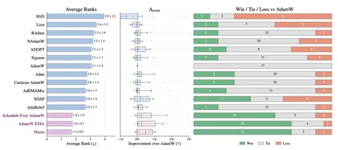

К такому выводу пришла tabular DL-команда Yandex Research, сравнив 15 оптимизаторов на 17 табличных датасетах для обучения современных моделей на основе архитектуры MLP. Сперва все оптимизаторы сравнивались для стандартных MLP, а затем лучшие варианты протестировали и на более продвинутых моделях вроде TabM.
В качестве референсного бейзлайна выступал широко распространённый оптимизатор AdamW. Сравнивали и вариации последнего: NAdamW, Cautious AdamW, AdEMAMix и другие. Кроме того, тестированию подверглись SOAP и Muon.
Самые высокие результаты показали Muon и AdamW с экспоненциальным скользящим средним (EMA) — эти методы обошли базовый AdamW более чем в половине датасетов. Добавление EMA к Muon может бустить качество на некоторых задачах, но в целом ванильный Muon более надежный.
Что в итоге? Muon показывает отличные результаты и рекомендуется к использованию как для базовых, так и для продвинутых моделей, а AdamW с EMA может быть неплохой альтернативой для более простых архитектур. Использование обоих оптимизаторов несколько замедляет обучение по сравнению с обычным AdamW, но всё зависит от модели. Вероятно, замедление будет допустимым во многих реальных приложениях.
ML Underhood
